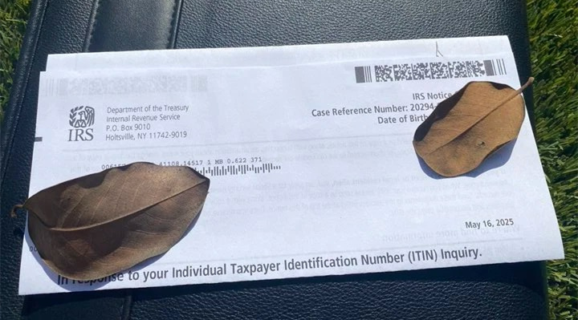
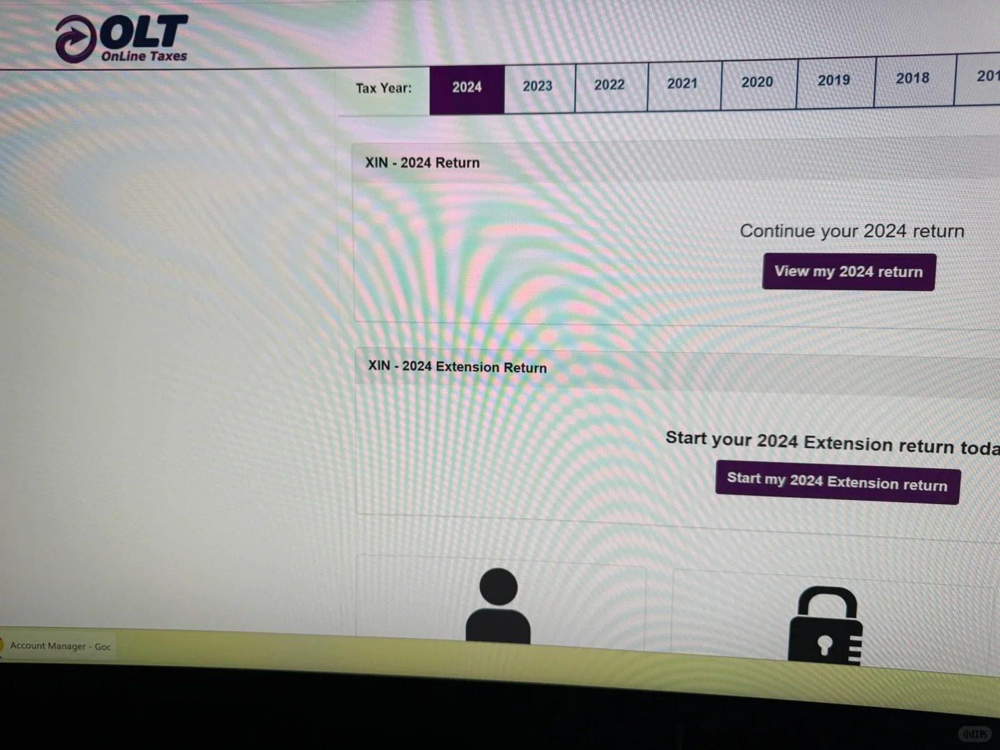
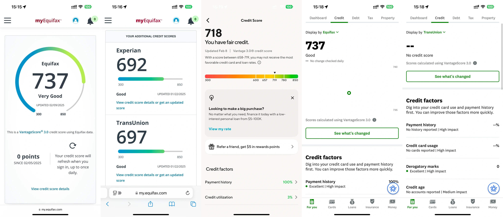
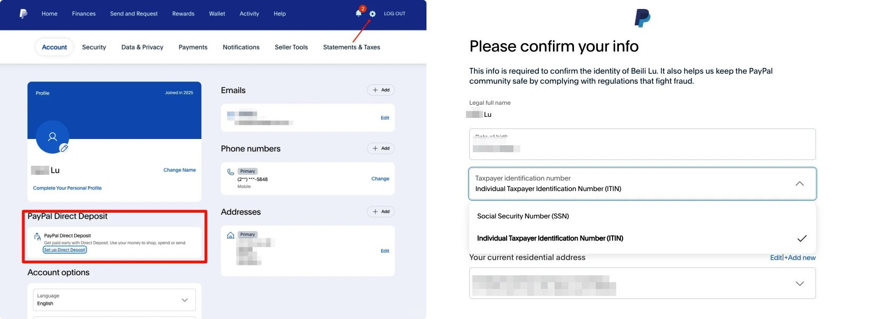

ITIN（Individual Taxpayer Identification Number，個人納稅人識別號碼）是美國國稅局（IRS）發給無法取得社會安全號碼（SSN），但又有美國報稅義務的非美國居民（非居民外国人，NRA）所使用的9位數字稅號。ITIN一律以「9」開頭，格式例如：9XX-XX-XXXX。
誰可以申請美國 ITIN？
主要適用對象為「需要在美國報稅、但無法取得 SSN 的外國人」，常見包括：
重要提醒：

擁有 ITIN 能幫您打開多扇通往美國金融與商業世界的大門，特別適合以下需求的台灣使用者：
截至2026年，IRS仍不支援完全線上提交ITIN申請。所謂「線上申請」只是下載表格、準備資料，最後仍需寄出紙本文件。
為什麼不建議自己DIY申請ITIN？主要原因是時間成本高與風險大：
自行申請需投入大量時間與精力，從填寫W-7表格、蒐集護照影本、公證文件、填報稅表，到寄送原件、追蹤進度等流程繁瑣冗長。常因格式錯誤（如簽名位置不對、理由勾選不符）或文件不全（缺1042-S股息證明、說明信未附）而被IRS要求補件或整份退回，導致整個流程拖延數月甚至半年以上，成功率不高。
更關鍵的是風險極高：DIY必須將護照正本寄至美國IRS（或經AIT認證的護照影本，仍需付費約50美元並親自預約）。國際快遞途中易遭遺失、被盜或損壞。一旦發生，不僅要花費數千元新台幣補辦護照、可能需回國處理，還會嚴重影響個人身份安全與後續金融申請（如銀行開戶、信用卡審核）。
一位網友分享：「第一次填錯→重寫…寄出後兩個月收到信說缺資料補件…前後整整拖了快5個月。」這就是DIY最真實的血淚教訓。
Certified Acceptance Agent（CAA，認證受理代理人）是 IRS 授權的專業機構，優點包括：
⚠️ 揭秘市面上常見的 CAA 違規操作（務必避雷！）
「幽靈」代簽名（Ghost Signing）：這是最嚴重的違規！W-7表格必須由申請人親筆簽名。很多無良中介直接模仿你的筆跡代簽，等於偽造文書。
「零接觸」辦理：合規的CAA一定要視訊面談核驗護照原件。那些說「傳個掃描件就行」的，不是P圖就是偽造驗證紀錄。
濫用地址（地址掛靠）：幾百人共用同一個收件地址，在IRS眼中就是典型的「ITIN Mill」（ITIN工廠），極易被列為高風險案件。
✅ 如何判斷你的 CAA 是否靠譜？（保姆級防雷指南）
最後提醒：代簽名等於留下永久法律風險。IRS現在或許不查，但你的簽名筆跡會永遠留在檔案庫中，成為一顆不定時炸彈。
正規 CAA 的底線：必須視訊、必須看護照原件、必須本人濕簽名、絕不代簽！
以下為兩位在 Fiverr 上口碑良好、具備 IRS CAA 資格的美國專業會計師，提供線上 ITIN 申請服務，費用透明，最低僅需 NT$5,600：
美國註冊會計師，IRS 認證 CAA，專精華語客戶 ITIN 申請，流程清晰、回覆迅速。
✅ 免寄護照正本｜✅ 提供視訊驗證｜✅ 含 W-7 + 1040-NR 全套文件
原本以為只要拿到 ITIN，開戶、申請信用卡、綁定帳戶就會順順利利，但實際走過一遭才知道：這條路不只是照著流程走，還有一大堆需要自己反覆試錯、摸索的小細節。
① ITIN：拿到號碼只是第一步
我的 ITIN 是 900 開頭，整個申請過程大約花了 8 週左右。IRS 用平信寄出，完全沒有追蹤號碼，全程就是「安心等」。收到號碼當下當然很興奮，但馬上就發現一個很現實的問題——很多金融平台在剛拿到號碼的頭幾週，系統根本還認不出你的 ITIN，尤其是在開戶或身分驗證階段特別容易被卡住。
後來我才摸索出一個時間規律：ITIN 下號後，通常需要再等 2～4 週，IRS 才會把資料同步到各大金融機構的系統。太早拿號就急著去申請，反而比較容易被系統打槍。
② Checking 帳戶：SoFi 驗證是第一個大關卡
我第一個開的 Checking 帳戶是 SoFi。註冊時使用 ITIN + 護照送件，第一次直接被系統退回，提示「Patriot Act 未通過」。
後來我重新整理資料：
• 重新拍攝護照（要用清晰原圖，千萬不要截圖或壓縮過的版本）
• 把填寫的地址改成跟當初申請 ITIN 時完全一模一樣的版本
這樣調整後，兩天就順利通過審核。
📌 小提醒幾個關鍵點：
• 地址、電話號碼、護照資訊務必要完全一致
• 上傳文件一定要用清晰的 PDF 或原圖（解析度要夠）
• 通過後可以直接順便開 Saving 帳戶，之後綁定 PayPal 也都很正常
③ Capital One 成為我的第一張信用卡
Checking 跑通之後，我就開始申請信用卡。我第一張選的是 Capital One，因為它對 ITIN 算是相對友善。
申請過程如下：
• 9/10 第一次 pre-approve → 沒過
• 9/17 第二次提交，把地址與電話資訊再做匹配調整 → 通過
• 9/25 收到「Say Hello」歡迎信，額度 $500
• 10/12 透過轉運順利收到實體卡
激活時需要做語音驗證，系統會要求輸入 ITIN 後四碼，整個流程大約 2 分鐘左右。激活完成後我直接綁定 Apple Pay，測試付款完全沒問題。
④ 電話驗證的幾個小訣竅
不管是 SoFi 還是 Capital One，只要進入人工或語音驗證階段，全部都是英文對話。
我自己的經驗是：
• 盡量使用固定的 IP 環境登入（不要一直跳來跳去）
• 如果英文不夠流利，建議事先把常問的問題寫下來（生日、地址、護照發行地等）
• 千萬不要頻繁切換手機/電腦或開 VPN，否則很容易被系統判定為異常，要求重新驗證
這些看起來很細的動作，其實對系統的風控判斷影響非常大。
核心邏輯只有兩個字：穩定 + 一致
⑤ 整體心得總結
• 一致性是王道：地址、電話、文件、IP 環境，能統一就盡量統一
• 建議先把 Checking 帳戶跑通，再來挑戰信用卡，起步會順很多
• 前期多花一點時間把基本資料對齊好，後面反而省事
拿到 ITIN 只是一個起點，真正考驗耐心和細心的部分，才剛剛開始。希望這些經驗能幫到正在摸索的你～
姐妹們～終於申請到 ITIN 了是不是超級開心？🥳 但千萬別以為這樣就萬事 OK 啦！拿到 ITIN 之後，這幾件事一定要記得處理，不然真的會踩雷後悔莫及啊～👇
✅ 報稅！報稅！報稅！
重要的事說三遍！📣
就算你不住在美國，只要有美國來源收入（像是房租、投資配息、股利等），通通都要用 ITIN 報稅喔！
小提醒：找一位靠譜的會計師或稅務專家幫忙，比較不會出包～
✅ 把 ITIN 號碼保管好！
ITIN 就是你的稅務身分證，絕對不能外洩！🔐
建議抄在小本本，或存在有密碼保護的筆電／手機備忘錄裡；千萬不要隨便告訴別人，小心身分被盜用！
✅ 定期查看 IRS 寄來的信件！
IRS 偶爾會寄重要通知給你，例如稅務提醒、ITIN 更新要求等。📬
務必確認你給 IRS 的地址是正確且最新的；如果搬家或換地址了，記得趕快更新！
⚠️ ITIN 是會過期的！
ITIN 不是永久有效的！如果連續 3 個稅務年度都沒有用來報稅，ITIN 就會在第 3 年底（12/31）到期失效～⏰
盡量每年都用 ITIN 報稅（哪怕是零申報也可以）；一旦過期要重新申請超級麻煩又花時間！
💡 有機會的話，考慮申請 SSN
如果你未來打算長期留在美國工作、生活，SSN（社會安全號）會比 ITIN 方便太多！
找到合法工作、有工作簽證後，就可以申請 SSN 來取代 ITIN；SSN 用途更廣，開戶、信用紀錄都更順暢～

雲玩家炒股券商需不需要報稅？
像 IBKR（盈透證券）和 Schwab（嘉信理財）這種國際券商，通常都會自動幫你填好 W-8BEN 表格（非美國居民稅務證明）。外國人享有稅務豁免，券商會自動扣繳該扣的稅（主要是股息部分），你自己基本上不用額外報稅。超方便！
如果你玩只服務美國公民的券商（如 Fidelity、Webull），要怎麼報稅？
如果你有填寫 ITIN 或 SSN，但已正確提交 W-8BEN，正常情況下券商不會發 1099-B 稅表給你，也就不用像美國稅務居民（RA）那樣繳資本利得稅。
但如果填了 ITIN/SSN 卻沒提交 W-8BEN，很可能會收到稅表。別慌！你依然可以按非居民外國人（NRA）身份申報。只要你如實填報，IRS 通常不會有問題。
⚠️ 目前尚未有因申報 NRA 身份而被券商關戶的實際案例，但理論上有風險，建議保留所有交易與身份證明文件。
NRA 炒股要怎麼報稅？
券商發的稅表主要有兩種：
• 1099-B：股票交易的資本利得（價差收益）
• 1099-DIV：股息收入（台灣常說的分紅）
根據中美稅務協定：
• 資本利得（1099-B）→ 需申報，但稅率為 0%，不用真的繳稅。
• 股息收入（1099-DIV）→ 必須報稅，稅率 10%（NRA 只需繳這 10%）。
小技巧補充（進階版）：
像 Fidelity 的 SPAXX（類似美版餘額寶的貨幣基金），雖然看起來像利息，但券商會開 1099-DIV 而非 1099-INT，因此預扣 10% 稅，很多人覺得很痛。
但根據美國稅法，美國政府債券利息對 NRA 是免稅的（portfolio interest exemption）。SPAXX 投資組合中大部分為美國國債，理論上可主張大部分收入免稅，僅就真正股息部分繳稅。
實際稅額可能只剩 1099-DIV 金額的 10% × 10% 左右（超級划算！），但需自行研究或諮詢稅務專業人士確認。
銀行利息與開戶獎勵（1099-INT）要不要報稅？
答案：可以報，也可以不報，看你的情況。
✅ 建議報的原因：ITIN 若連續三年無報稅紀錄，IRS 可能回收號碼。為保住 ITIN，許多人會用 OLT 或線上報稅工具，將 1099-INT 填入，選擇 NEC（Not Effectively Connected），稅率 0%，申報 1 美元即可維持有效狀態。
✅ 可以不報的原因：如果你當年已有其他必報項目（如 1099-DIV 股息），這些小額 1099-INT（尤其金額小於 $10）通常可忽略，IRS 不會特別追查。
總結：ITIN 玩家報稅的重點其實不在「繳多少稅」，而在「保住身分」與「正確分類收入性質」。有大額股息或複雜情況時，建議搭配 Sprintax 或專業稅務顧問處理，比較保險～

以下方法特別適合沒有 SSN、僅持有 ITIN 的朋友。目前 Equifax 仍是線上最容易取得的信用局，TransUnion 和 Experian 相對困難，所有分數皆採用 VantageScore 3.0 模型計算。
✅ Equifax 官方管道（最友善）
第一種方式：當你持有 Capital One 信用卡 並至少有一期正常帳單後，直接到 Capital One 網站註冊 CreditWise 或相關免費信用監控服務，完全不用聯絡客服就能成功註冊，立即看到 Equifax 的信用分數與簡易信用報告，非常方便。
第二種方式：先註冊 myEquifax 免費帳戶，之後通常會收到一封 email，提供 1 美元試用 Equifax Complete Premier 一個月 的連結。透過這個試用可以一次查看三個信用局（Equifax、Experian、TransUnion）的信用分數與詳細信用報告。
🔍 實測發現這個 1 美元試用可以多次重複使用（例如隔幾個月再註冊新 email），看完記得取消以避免自動扣款。
📌 更新頻率提醒：
• Equifax 免費版：每月更新一次
• Equifax 付費版：每日更新
• Experian / TransUnion：每次付費才更新，或每年有一次免費更新機會
✅ SoFi（穩定追蹤 TransUnion）
只要註冊 SoFi 帳戶，就能在 App 或網頁直接查看 TransUnion 的信用分數，更新速度非常即時，幾乎是 real-time。這對特別想追蹤 TransUnion 分數的 ITIN 使用者來說是目前相對容易的選擇，註冊過程也順利。
✅ Credit Karma（近期突破）
過去不太接受 ITIN，但從 2025 年底到 2026 年初 開始，當你輸入後四位無法辨識時，系統會自動要求輸入完整 ITIN，這時填入完整號碼就能成功註冊（建議全程使用美國 IP 會更順暢）。
註冊成功後，App 可查看 Equifax 的信用分數與報告，更新頻率高。雖然介面也會顯示 TransUnion，但 ITIN 使用者通常無法看到完整內容，會呈現空白或受限狀態。
💡 2026 年最推薦組合策略：
以上方法皆於 2026 年初實測有效，但信用局政策隨時可能調整，建議註冊時使用美國 IP，並保留相關畫面備份。有新發現會再更新。

許多雲居民在取得 ITIN 後，都想進一步解鎖美國區 PayPal 的完整功能，尤其是申請 PayPal 實體卡（PayPal Cashback Mastercard®）並綁定 Apple Pay 或 Google Pay。
這裡分享一個關鍵實測經驗：
PayPal App 內無法直接輸入 ITIN，只提供 SSN 欄位，導致許多使用者誤以為 ITIN 無法使用。但實際上，正確做法是透過電腦瀏覽器登入 PayPal 官網（paypal.com），在「帳戶設定」→「稅務資訊」中手動填入完整的 ITIN 號碼。
填寫完成並成功驗證後，回到 PayPal App，原本隱藏的「申請實體卡」選項就會自動出現！
一位使用者實測：「剛下好 ITIN，歐區 PayPal 幾乎半殘，轉戰美區後，官網填完 ITIN，App 立刻跳出實體卡申請入口，現在已順利綁定 Apple Pay，實體卡也寄到美國地址！」
📌 操作提醒：
ITIN 是連結美國金融體系的重要橋樑。選對專業代理，並做好合規維護，就能安全高效地拓展全球金融版圖。